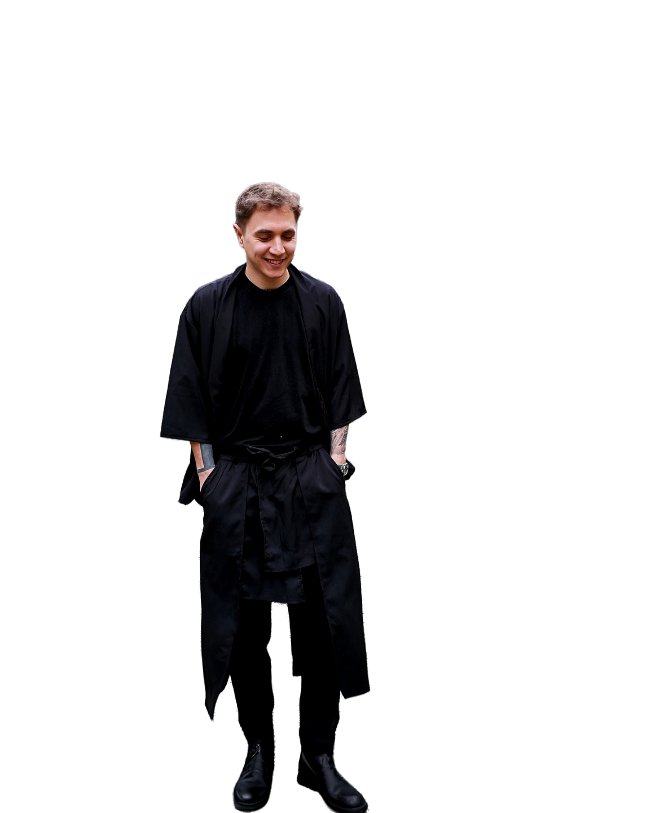

Résumé (honestly)
Grab it, toss itScroll ↓

Bellér Zoltán Ezra
ZárszóA profi önéletrajzomban megtalálod, mit csináltam, milyen rendszerekkel dolgoztam, és milyen tapasztalatokat szereztem.
Ebben pedig azt, hogy milyen ember próbálja mindezt összehozni.